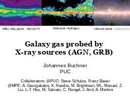
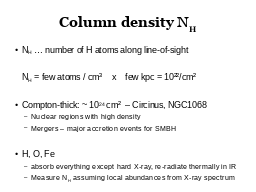
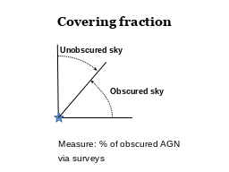
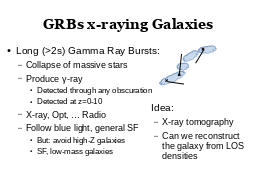
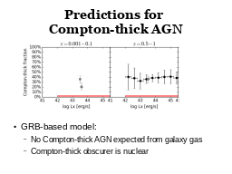
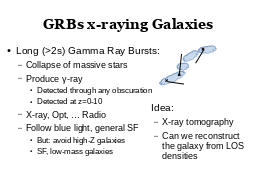
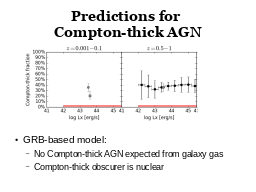

(back to all presentations)Table of contents |
Author: Johannes Buchner Homepage: http://astrost.at/istics/ Further information: Galaxy gas probed by X-ray sources (AGN, GRB)Abstract: Gas has a dual role in the Universe: it creates light e.g. by fusion in stars and accretion onto compact objects, but it also absorbs and extincts light. The most dense gas in the universe is probed by bright X-ray point sources, which includes exploding stars in the form of Gamma Ray Bursts and accreting black holes (AGN). Both frequently show extreme levels of gas column densities of ~10^22/cm² (GRB) and 10^24/cm² (AGN). An open research question is how such thick obscurers with large covering fractions are created and maintained. On the way to answering this question, my research clarifies the role of galaxy-scale obscuration, through (1) X-ray tomography reconstruction of host galaxy gas using GRB line-of-sight column densities and (2) by analysing modern hydrodynamic cosmological simulations which give well-constrained predictions for the gas content of galaxies. With the host galaxy obscuration understood, observations provide useful constraints for models of AGN and GRB obscurers on the covering fraction at various levels of absorption.    





|